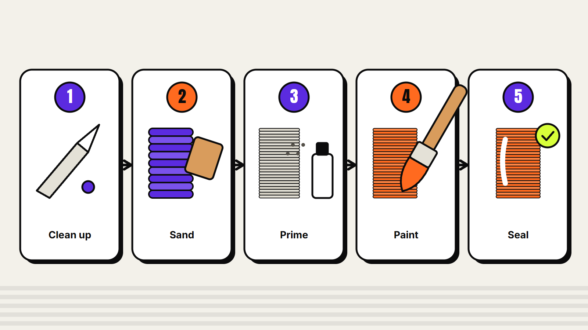
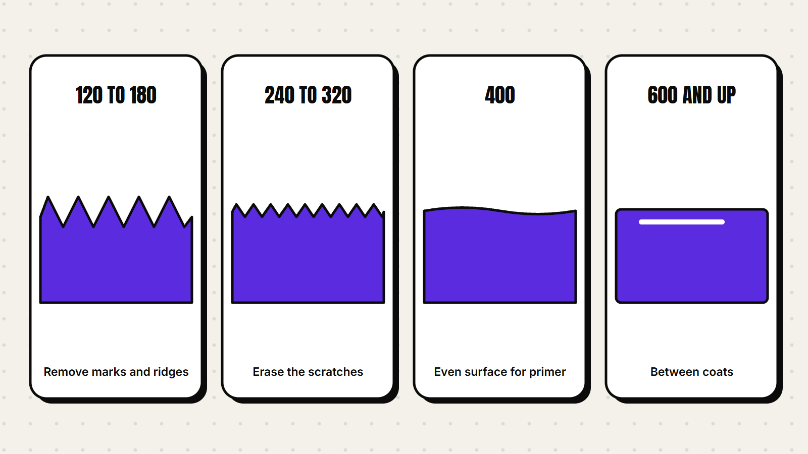

A raw filament print shows its layers. Many pieces look right that way, but some deserve a smooth surface and hand-picked colour. Sanding, priming, and painting can transform a print. The work takes patience more than special tools. Here is a safe, step-by-step approach.
Finishing suits display pieces, props that are not weapons, and gifts. Functional parts such as clips or brackets are often better left as printed, because paint can chip where they rub and added layers change fit.

Remove supports and trim stray strings with a sharp blade, cutting away from your fingers. Fill deep gaps with a suitable filler or putty and let it set fully.
Start with a medium grit to flatten ridges, then move to finer grits. Sand in small circles with light pressure. Do not use fast power sanding, since friction heats and melts PLA. Wipe off dust between grits.

Primer helps paint grip and reveals flaws. Use a primer suitable for plastic, in thin coats. Let it dry, check under a lamp, sand lightly with fine paper, and add another coat if needed.
Thin coats beat thick ones. Acrylic paints are common and beginner-friendly. Brush paints work for detail; spray paint covers large areas evenly. Test paint on a scrap print first, because some solvents attack certain plastics.
A clear coat protects paint and sets the sheen: matt, satin, or gloss. Check that it is compatible with your paint. Allow full curing time before handling.
| Stage | Typical grit | Purpose |
|---|---|---|
| Rough shaping | 120 to 180 | Remove support marks and ridges |
| Smoothing | 240 to 320 | Erase scratches |
| Before primer | 400 | Even surface |
| Between coats | 600 and finer | Remove dust nibs |
Resin prints must be washed and fully cured before sanding, and sanding dust needs the same care. ABS and ASA can be smoothed with solvent vapour, which is hazardous and best left to trained people.
Paint does not make a print food-safe, and it can wear on pieces that are handled. Wipe with a soft dry cloth and avoid solvents.
At Akrinity, painting is not part of the standard price. Where we offer it, it is made to order and quoted separately. Say what colours and finish you want in the quote form.
Tip: Practise on a failed print. Mistakes there cost nothing and teach you how the paint behaves.
Sketch the colour plan before opening any tin. Paint light colours first and darker details afterwards, which is easier to correct. Use masking tape for crisp edges and remove it while the paint is still slightly soft. A small magnifier and a fine brush help with eyes and lettering. Photograph each stage, so you can repeat the result on a second piece, and write down the paint names used. Store the finished item away from sun and heat while the clear coat hardens fully.
You can on small hidden pieces, but paint may grip unevenly and layer lines will show more. Primer is the step that most improves the finish.
Water-based acrylics are forgiving, clean up with water, and have little smell. Follow the label, and check that primer and sealer are compatible with them.
Follow the label, and allow longer in humid weather. A coat that feels dry on top may still be soft underneath.
Light sanding removes very little. Heavy sanding can thin walls or break through them, so ask for thicker walls if you plan to finish a piece heavily.
Wipe them gently with a soft, barely damp cloth. Soaking and scrubbing can lift paint and cloud the clear coat.
Perfect smoothness takes many rounds of filling and sanding. Decide the viewing distance first. A shelf piece seen from two steps away needs far less work than one held in the hand. Stopping at a good, even finish avoids sanding through thin walls or rounding off the details that made the print worth finishing.
For colour options without paint, read single or multi-colour, and for smoother prints from the start, see layer height.